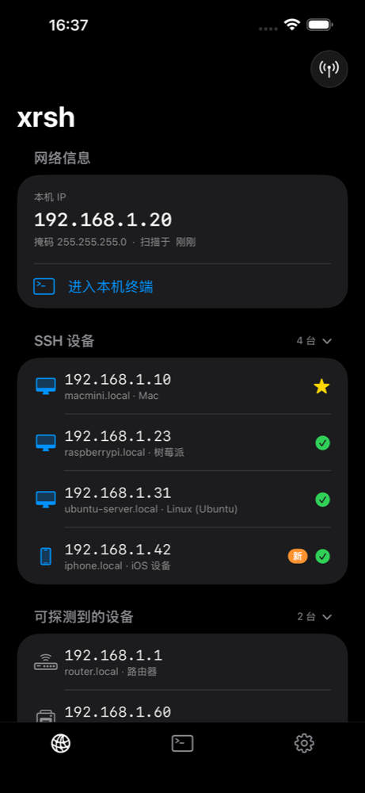
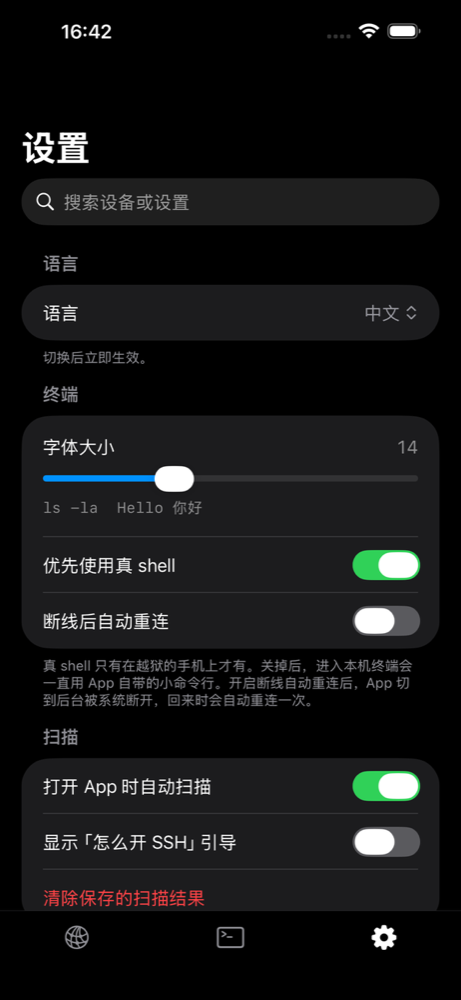

xrsh
1.1
iOS 上轻量的 SSH 终端与局域网设备扫描工具


设备页
扫描当前 Wi‑Fi 网段，找出 SSH 设备，显示设备名和推测的类型（Mac、Windows、树莓派、路由器等）
记住上次扫描结果；长按设备可以起名、复制 IP、SSH 连接
设置过免密登录的设备点一下直接进终端
终端页
SSH 终端，支持密码和密钥登录，记住主机密钥
一键设置免密登录（ed25519 密钥，私钥存在系统钥匙串）
本机终端：越狱环境下是真 shell
常用命令面板、SFTP 传文件
AI 助手（可选，默认关闭）
在终端输入 /xr 和 AI 对话，用你自己的 OpenAI 兼容接口
只读命令自动运行，会改动设备的命令先问你，危险命令直接禁止
界面有中文、英文、日语和俄语。
只在 roothide 越狱的 iPhone 上测过；rootless 版是同一个 App，装的位置不同，没有在真机上测过
如果之前用 TrollStore 装过 xrsh，请先在 TrollStore 里卸载，再从这里安装（两个是同一个 App，同时装会冲突）
首次打开要允许「本地网络」权限，否则扫描不到设备
许可：PolyForm Noncommercial 1.0.0（可以个人非商业使用）
源代码
·
反馈问题